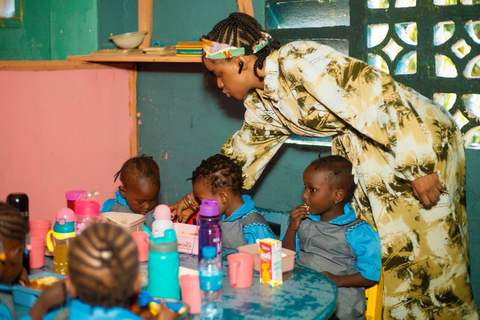

Nursery
Nursery
A gentle, play-based start to school life, with a focus on phonics, early numbers, speaking and social skills.
- Learning through play
- Phonics and early reading
- Early numbers
- Speaking and social skills